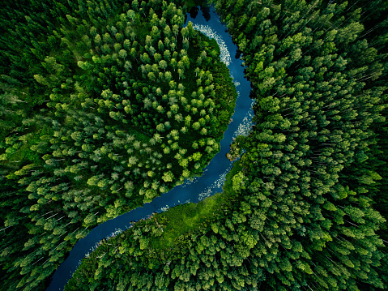
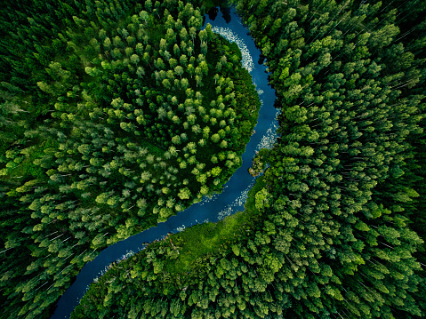

Our Goal
 

The Life Cycle of Nature
It is a completely innovative and productive thought of co-existing with nature while adding another dimension to an indoor or outdoor living space.
With the help of Go-Green , People can able to complete the life cycle of Nature.